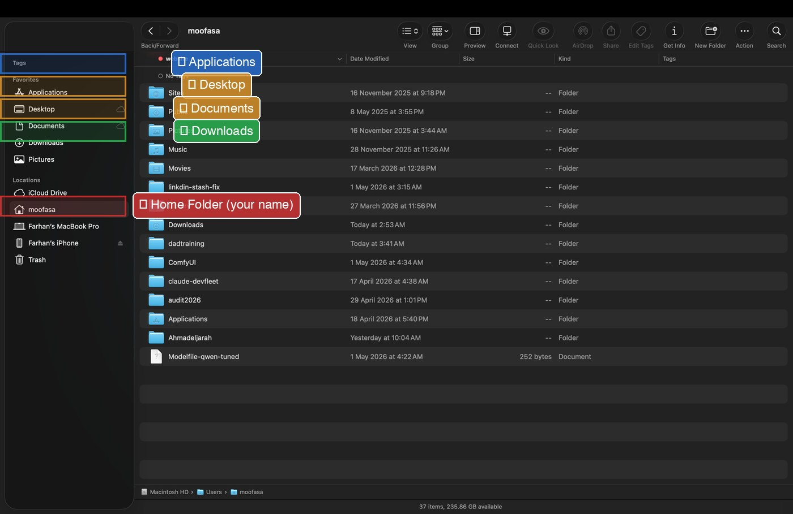
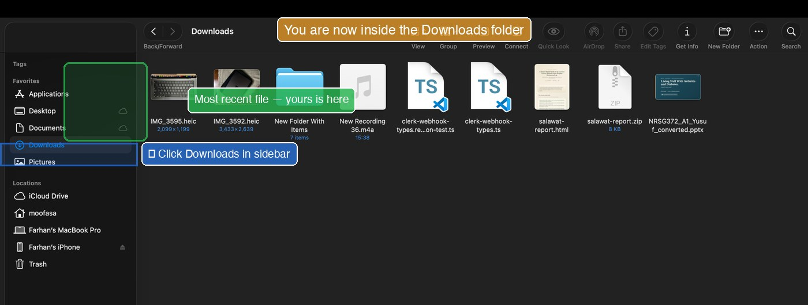
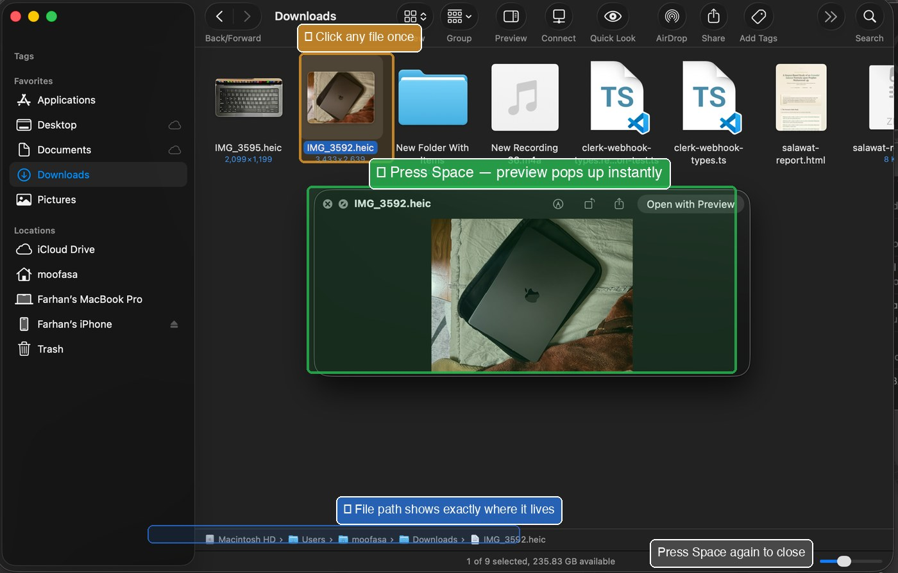
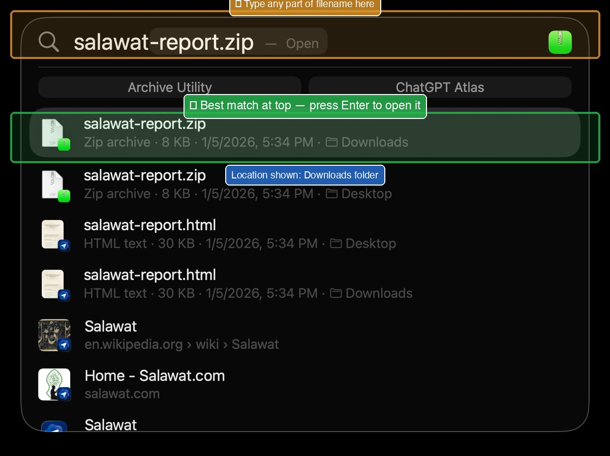

Meet Finder. Your file explorer.
After this slide, you'll know how to open Finder and what it looks like. Finder is where every file on your Mac lives.
Look at the Dock at the bottom of your screen. The very first icon — a half-blue, half-grey smiley face, is Finder. Click it. A window opens.
Finder is the Mac's File Explorer. It shows you every folder and every file you have. It's always running, even if you don't see it.
The five places you'll use every day.
After this slide, you'll recognize the five places in Finder's sidebar where every file you'll ever need lives.
On the left side of any Finder window is a list of locations. You can ignore most of them. These five matter:
-
🏠 Your Name (Home folder)
Your personal main folder. Click here to see Documents, Downloads, Desktop, Pictures, Music, all the folders that belong to you.
On Windows: this was
C:\Users\YourName. -
🖥 Desktop
Whatever you see on your wallpaper. Files dropped on the desktop are stored here.
-
📄 Documents
The recommended home for your Word, Excel, PowerPoint, PDF files. Save your important documents here.
-
⬇ Downloads
Where every file you download from the internet lands first — including files saved from WhatsApp, attachments from email, photos from websites.
-
🟦 Applications
Every app installed on your Mac. WhatsApp, ATLAS, Word, all here.

Where downloaded files actually go.
After this slide, you'll know exactly where to find any file you save from WhatsApp, email, or the web, every time.
When you click Save or Download on a file from the internet, WhatsApp, or email, by default it goes to one place:
Finder → Downloads
How to get there in 1 second
- Open Finder (smiley icon in Dock).
- On the left sidebar, click Downloads.
- The most recent files are at the top.

If you can't find a file you just saved:
- Open Finder → click Downloads.
- Sort by date: View menu → Sort By → Date Modified.
- Newest files at the top. Yours is there.
Press Space. Peek inside any file.
After this slide, you'll be able to preview any file without opening the app, saving you time and confusion.
Mac has a magic feature called Quick Look. It lets you peek inside any file without opening the app it belongs to.
- In Finder, click any file once (just one click, don't double-click).
- Press the Space bar.
- A preview pops up showing what's inside.
- Press Space again to close it. No app opened. No fuss.
This works for:
- Photos and screenshots
- PDF documents
- Word, Excel, PowerPoint files
- Text files
- Videos (it'll even play them)
- Audio files (it'll play them too)

Forgot where you saved it? ⌘+Space.
After this slide, you'll never have to manually hunt for a file again.
Even if you don't remember which folder you saved a file in, Spotlight finds it.
- Press ⌘+Space.
-
Type part of the filename. (You don't need the full name.)
Looking for Bank_Statement_April_2026.pdf? Just type "bank april" or "statement april".
- Spotlight shows matching files. Click the one you want, or hit Enter.
-
To see where a file lives without opening it: hold ⌘ while clicking the file in the Spotlight results, it reveals the folder.

Scrolling feels backwards. Here's the fix.
After this slide, your trackpad will scroll the way you expect it to.
Mac has a setting called Natural Scrolling that's the opposite of Windows. When you slide two fingers down on the trackpad, the page goes up. Many Windows users find this confusing.
How to switch it back to "Windows-style":
- Click the Apple menu () at the top-left corner.
- Click System Settings.
- In the left sidebar, click Trackpad.
- Click the Scroll & Zoom tab at the top.
-
Find the switch labelled Natural scrolling. Turn it OFF (the switch goes grey).